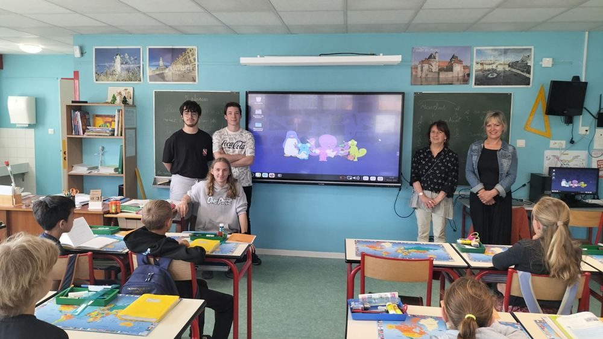

Bienvenue sur le site de la Démarche NIRD : pour un numérique libre et écocitoyen dans les établissements scolaires !
À l'heure où la fin du support de Windows 10 nous rappelle notre dépendance technologique et nous oblige à faire des choix, un collectif enseignant issu de la forge des communs numériques éducatifs invite les établissements scolaires et les collectivités qui les accompagnent à s'engager progressivement vers un Numérique qui soit davantage Inclusif, Responsable et Durable, en rejoignant la « démarche NIRD ».
Au carrefour du double objectif de transformation numérique et de transition écologique, la démarche NIRD repose sur trois piliers :
- Inclusion : accès équitable au numérique, réduction de la fracture numérique…
- Responsabilité : usage raisonné et réflexif de technologies souveraines et respectueuses des données personnelles…
- Durabilité : lutte contre l'obsolescence programmée par le choix de Linux pour l'équipement, maîtrise des coûts…
La démarche, en trois jalons (mobilisation, expérimentation et intégration), est pour le moment volontairement peu détaillée pour y être co-construite avec les participants. Elle s'adresse dans un premier temps aux enseignantes et enseignants intéressés en leurs proposant de nous rejoindre sur un forum Tchap dédié pour échanger, mutualiser, témoigner et aider à engager leur établissement scolaire en tant que pilote de la démarche.
Condition nécessaire mais non suffisante, et parti-pris assumé, l'adoption concrète et graduelle du système d'exploitation libre Linux au sein de l'établissement scolaire constitue à la fois le socle et le premier levier de cette démarche. Pour équiper le parc informatique (mais aussi les familles ou les écoles aux alentours) en y menant notamment des projets de reconditionnement si possible avec les élèves. Pour ouvrir le champ des possibles pédagogiques. Pour engager petit à petit l'ensemble de l'établissement scolaire vers un usage frugal et qualitatif du numérique qui soit davantage aligné avec ses missions de service public.
Cette démarche s'inspire directement de la réussite du projet d'établissement NIRD du lycée Carnot de Bruay-la-Buissière qu'elle souhaite voir essaimer et passer à l'échelle, en fédérant les initiatives existantes et en suscitant de nouvelles initiatives parmi les écoles, les collèges et les lycées français.
Cette démarche spontanée n'a pas, pour le moment, de reconnaissance ou légitimité officielle. Elle provient du terrain et est dictée par un certain sentiment d'urgence. Nous mesurons l'ampleur de la tâche et rien ne pourra se faire à terme sans la mobilisation de nombreux acteurs, des enseignants jusqu'aux collectivités, et le soutien de l'institution.
Pour aller plus loin :
- La démarche plus en détails
- La liste des premiers établissements pilotes
- Le choix Linux de la démarche (ainsi qu'une distribution « démarche NIRD » à installer et utiliser)
- L'invitation à reconditionner
- Une page dédiée aux collectivités
- Un argumentaire expliquant et justifiant la démarche
Pour participer :
- Rendez-vous sur notre forum Tchap
- Bientôt ici la programmation de webinaires d'information et de formation
